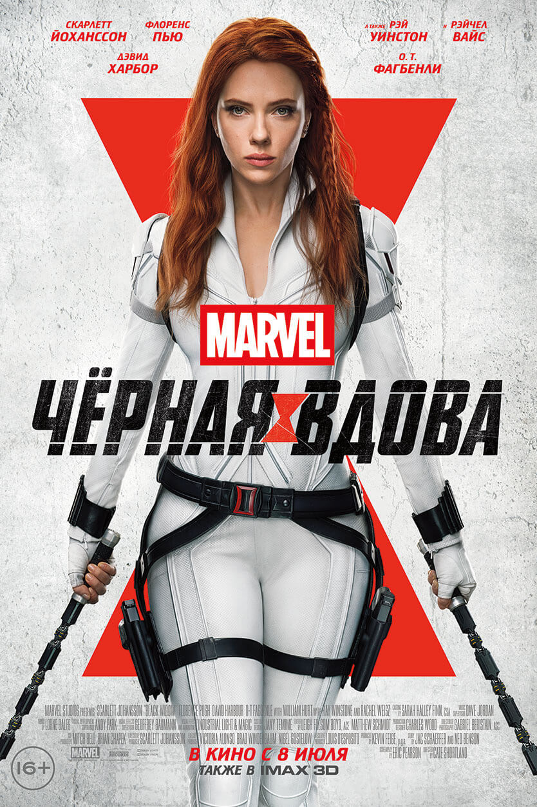

Черная вдова
1995 год. Русские агенты под прикрытием, суперсолдат Алексей Шостаков и Чёрная вдова Мелина Востокофф живут в Огайо вместе с приёмными дочерьми Наташей Романофф и Еленой Беловой. Они завершают миссию по краже разведданных «Щ.И.Т.а» и сбегают на Кубу, где встречаются со своим боссом, генералом Дрейковым, который отправляет Наташу и Елену в Красную комнату для тренировок. Проходят годы. Алексей попадает в российскую тюрьму, а Наташа переходит на службу в «Щ.И.Т.», взрывая Дрейкова и его маленькую дочь Антонию в Будапеште. 2016 год. Наташа Романофф скрывается от правосудия за нарушение Заковианского договора.[N 2] Она сбегает от государственного секретаря США Таддеуса Росса и бежит в Норвегию, где Рик Мейсон предоставляет ей конспиративное жильё. Тем временем, на миссии в Марокко Елена Белова убивает бывшую вдову, но та успевает распылить в лицо Елене некий синтетический газ, лишающий Красную комнату контроля над её сознанием. Белова отправляет несколько ампул противоядия Наташе в надежде, что та вернётся и поможет ей. В Норвегии Таскмастер нападает на машину Романофф, которая не подозревает, что в её машине противоядие. Наташе удаётся ускользнуть; она узнаёт, что противоядие прислала Елена. «Сёстры» воссоединяются в Будапеште, где на них нападают другие Чёрные вдовы. Наташа узнаёт, что Красная комната всё ещё существует и её глава Дрейков жив. Наташа и Елена сбегают от Таскмастера и с помощью Рика Мейсона получают вертолёт. Романофф и Белова вытаскивают из тюрьмы Алексея Шостакова, чтобы узнать, где скрывается Дрейков. Алексей предлагает поговорить с Мелиной Востокофф, которая всё ещё работает на Дрейкова и живёт на ферме под Санкт-Петербургом, занимаясь экспериментами по контролю сознания. На «семейном» обеде Елена признаётся, что их фальшивая семья в своё время была для неё единственной. Востокофф, будучи верной Дрейкову, выдаёт ему их местонахождение, и героев забирают на воздушную базу Красной комнаты. Выясняется, что на ферме Мелина и Наташа поменялись местами с помощью технологии лицевых масок[N 3] и спланировали захват комнаты. Наташа узнаёт, что под маской Таскмастера скрывается Антония Дрейкова, которая при взрыве получила настолько серьёзные травмы, что Дрейков был вынужден вставить в её голову чип, превратив свою дочь в идеального солдата. Романофф понимает, что не может навредить Дрейкову из-за блокировки феромонов, установленной у каждой из вдов. Наташа намеренно перебивает свой носовой нерв, чтобы отключить блокировку, и нападает на Дрейкова. Тем временем, Мелина пытается вывести из строя двигатель корабля, Алексей сражается с Антонией, а Елена ищет других вдов, которых Дрейков натравливает на Наташу. В критический момент Белова успевает распылить над ними бомбу из ампул антидота, что освобождает разумы вдов. С помощью пульта управления Красной комнаты Романофф копирует местонахождения вдов по всему миру. Воздушная база теряет высоту. Мелина и Алексей улетают на самолёте, а Елена взрывает спасательный корабль Дрейкова. Наташа отдаёт ей парашют, а сама сражается в небе с Таскмастером. После успешного приземления Романофф освобождает Антонию от контроля разума. Елена, Мелина и Алексей забирают Антонию и других вдов и прощаются с Наташей. Белова дарит «сестре» на память свой жилет, а Романофф отдаёт ей последнюю ампулу с противоядием, призывая освободить от контроля разума других вдов по всему миру. После чего Наташа наблюдает за приближающейся колонной автомобилей генерала Росса. Две недели спустя Романофф встречается с Риком Мейсоном, который предоставляет ей квинджет. Наташа улетает на нём с целью освободить Мстителей из тюрьмы Рафт. В сцене после титров, действие которой происходит после смерти Наташи,[N 4] Елена Белова на могиле наречённой сестры встречает графиню Валентину Аллегру де Фонтейн, своего работодателя. Елена узнаёт, что её следующая миссия — выследить и убить человека, «виновного» в смерти Наташи — Клинта Бартона.
Назад